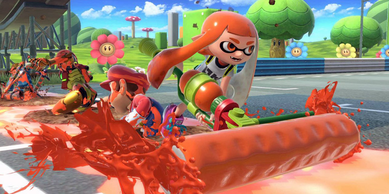
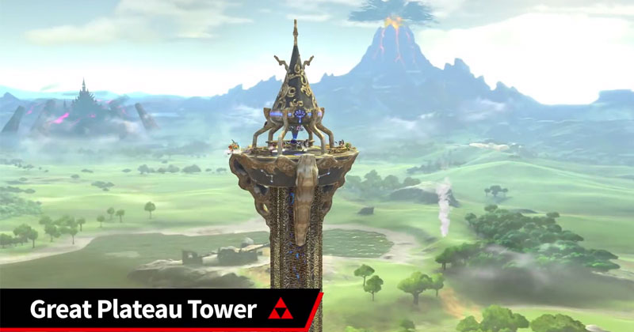

|
Para el Nintendo Switch. El juego parece estar a la altura de su nombre, y quiere llegar mucho más lejos, por eso, el director Masahiro Sakurai anunció hoy que el juego contará Nuevos Personajes
Durante el livestream de Nintendo en E3 2018, vimos un adelanto del próximo Super Smash Bros Ultimate. Durante la transmisión, Nintendo echó atrás la cortina y nos dio una
Antes de esta actualización ¿tenías un luchador favorito dentro del juego? Bueno, te contamos que estás de suerte, ya que Super Smash Bros Ultimate contará con todos los
Pero eso no es todo. Además de la lista completa de jugadores que vimos en el pasado, veremos un número de nuevos personajes que se unirán a la pelea, dando al juego más de
Algunos fanáticos suponían que Super Smash Bros Ultimate no iba a tener suficientes personajes nuevos, pero esos temores están infundados, pues existe una gran cantidad de nuevas
Otros nuevos personajes incluyen Chrom from Fire Emblem: Awakening, y Dark Samus. King K. Rool de Donkey Kong también se une a la pelea, y parece ser un peso pesado que puede  Nuevos Escenarios
Durante el evento de Nintendo Direct del 8 de agosto, Sakurai reveló que Super Smash Bros Ultimate contará con 103 etapas que abarcan toda la cronología de la serie, y todas estarán
Los amantes de la música estarán contentos al saber que más de 800 canciones estarán disponibles durante las peleas. Además, los temas musicales de una serie en particular se podrán  |